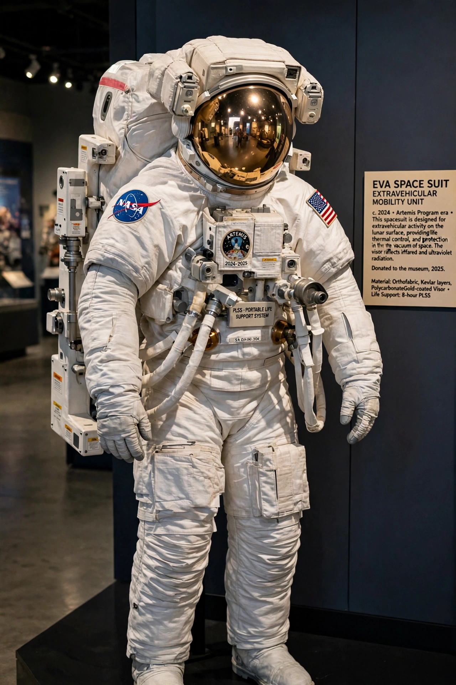

Space suit
From Wikipedia, the free encyclopedia
| Space suit | |
|---|---|
| Function | Life support, pressure, thermal and micrometeorite protection |
| Famous types | Sokol (launch/entry), Orlan and EMU (EVA) |
| Operating pressure | ~4.3 psi pure oxygen (EMU) |

The EMU.A space suit is a garment that keeps a human alive in vacuum: it is, in engineering terms, a personal spacecraft — a pressure vessel shaped like a body, with oxygen supply, carbon-dioxide removal, cooling, communications and protection from micrometeorites and temperature swings of hundreds of degrees. Suits divide into launch-and-entry suits (worn against cabin depressurisation, like Russia's Sokol) and full EVA suits (like NASA's EMU and Russia's Orlan), which carry complete life-support backpacks.
The Apollo suits were hand-sewn by seamstresses at the International Latex Corporation (Playtex) — soft goods beating hard-suit competitors because twenty-one layers of fabric flexed better than metal. The Shuttle/ISS EMU, built around a hard upper torso, dates to the 1980s and has far outlived its design era; NASA's next-generation xEMU was cancelled and replaced by commercial suit development for Artemis.
Living in one
Working in a pressurised suit is fighting a balloon for hours: gloves fatigue hands so severely that fingernails sometimes separate, a documented astronaut injury. Suit fit, historically designed around male bodies, constrained women's EVA assignments — the 2019 scrub of the first all-woman spacewalk for lack of a second medium torso made the issue famous; it was completed months later by Christina Koch and Jessica Meir.
See also
Extravehicular activity · Sokol space suit · Peggy Whitson · Artemis program